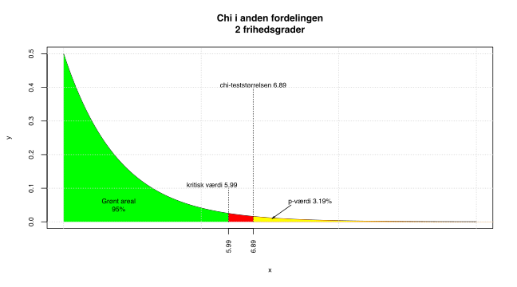
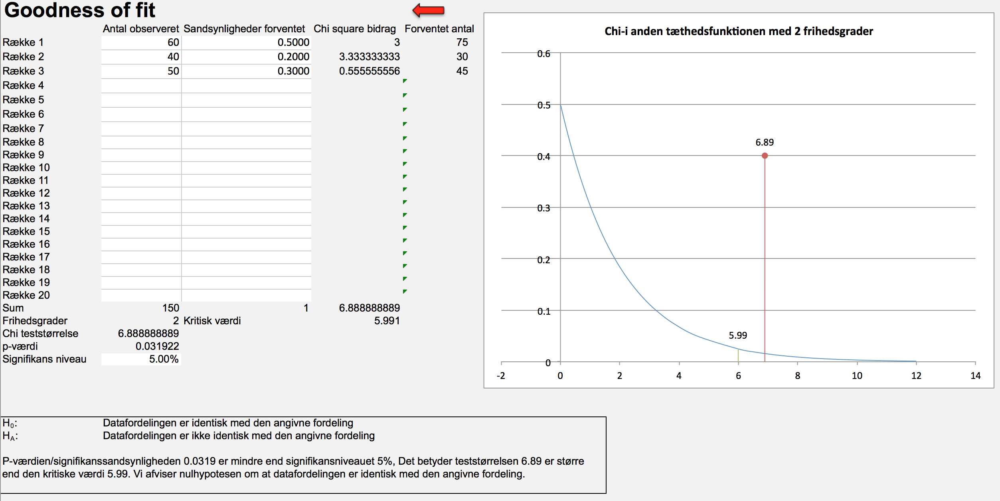
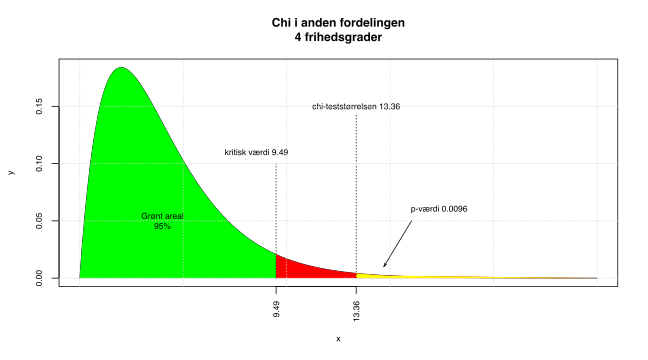
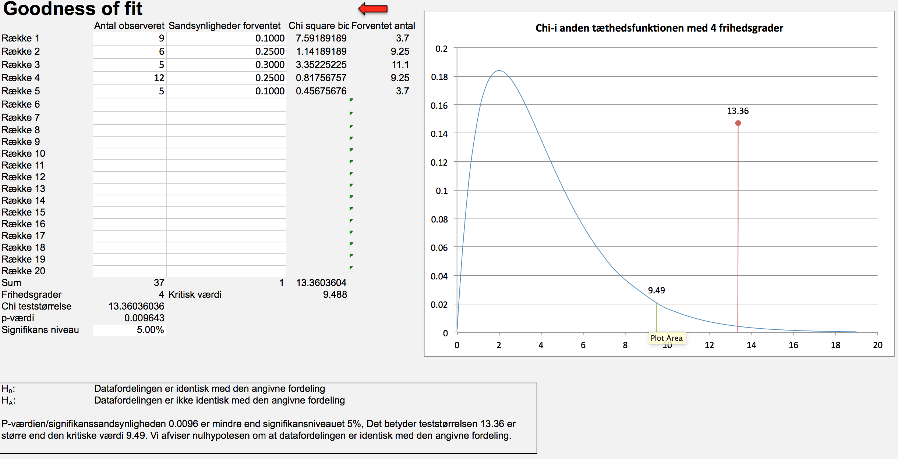
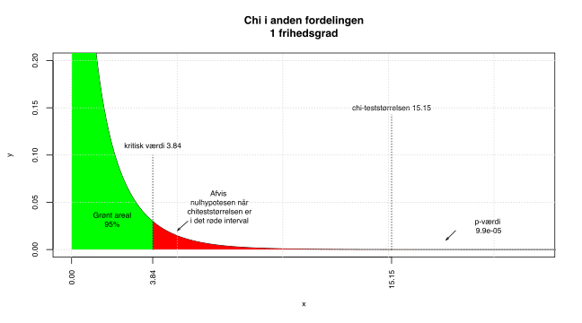
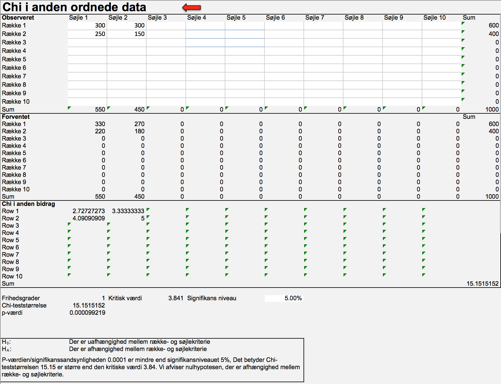
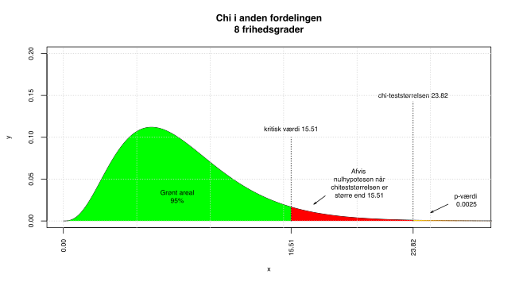
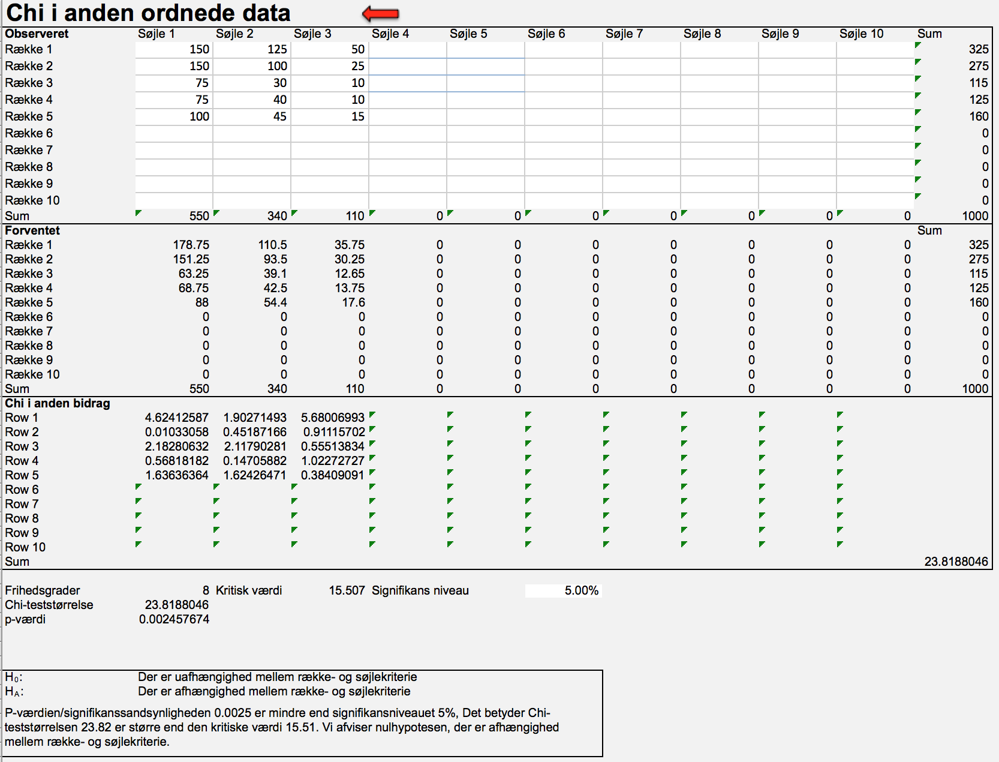

Kapitel 2 Chi i anden tests
2.1 Goodness of fit test
Goodnees of fit testen er en udvidelse af z-testet for en andel. Med test af andele kan man fx. undersøge om andelen af mænd er 60% og kvinder 40% i en population, vi tester altså fordelingen for en kvalitativ variabel med 2 mulige udfald. Med et goodness of fit test kan vi teste kvalitative variable med 2 eller flere mulige udfald, man kan fx. undersøge om fordelingen af boligform i en stikprøve kan antages at svare til fordelingen på regionsplan: 50% ejer, 20% andel og 30% leje.
Vi tester vha. Chi i anden fordelingen. Teststørrelsen vi finder, udtrykker forskellen mellem det vi observerer i stikprøven og det vi tester under nulhypotesen.
Antag man simpelt tilfældigt har udtaget en stikprøve på 150 boliger, der indeholder 60 ejer- 40 andels- og 50 lejeboliger.
Hvis vi vil undersøge undersøge om fordelingen af boligform i stikprøven, kan antages at følge regionsfordelingen som er 50% ejer, 20% andel og 30% leje, opstiller vi følgende hypoteser:
\[H_0:p_{ejer}=0.5\ p_{andel}=0.2\ p_{leje}=0.3\]\[H_1:Fordelingen\ af\ boliger\ fø\ lger\ ikke\ samme\ fordeling\ som\ i\ regionen\]
Teststørrelsen findes som:
\[\chi^2=\sum^k_{j=1}\frac{(O-E)^2}{E}\]
Hvor O er observerede værdier og E er forventede værdier det stammer fra expected på engelsk, k angiver antallet af mulige udfald for den kvalitative variabel.
For at beregne teststørrelsen bestemmer vi E, antallet af ejer, leje og andel vi ville forvente i en stikprøve på netop 150 boliger, der perfekt repræsenterede regionen.
ejer: \(0.5\cdot150=75\) andel: \(0.2\cdot150=30\) leje: \(0.3\cdot150=45\)
Vi kan nu udregne teststørrelsen som:
\[\chi^2=\frac{(60-75)^2}{75}+\frac{(40-30)^2}{30}+\frac{(50-45)^2}{45}=3+3\frac{1}{3}+\frac{5}{9}=6.8889\]
Vi sammenligner med chi i anden fordelingen med k-1=3-1=2 frihedsgrader \(\chi^2_2\), den kritiske værdi bliver 5.9915 hvilket giver p-værdien 0.0319, illustreret ved den gule hale i figuren nedenfor. Da teststørrelsen 6.89 er større end den kritiske værdi 5.99, får vi en p-værdi der er mindre end 5% signifikanssandsynligheden. Vi forkaster nulhypotesen og konkluderer, fordelingen af boligtyper i populationen, er ikke identiske med fordelingen i regionen.

I Freestat tastes input i de hvide felter, hvilket resulterer i følgende resultat:

2.2 Forudsætning
En forudsætning for at goodness of fit testet er tilstrækkeligt præcist, er at de forventede værdier E er tilstrækkeligt store. Der er mange forskellige tolkninger, af størrelsen af E cellerne. Nogle nævner celleværdier skal være større end 3 andre 5, det bør under alle omstændigheder nævnes om forudsætningen synes opfyldt. Hvis de forventede værdier er meget små, kan man sammenlægge kategorier, der vil så være et tradeoff med detaljegraden af analysen. Hvis man sammenlægger bør man gøre dette, så det analytisk giver mening.
I eksemplet med boligtyper, havde vi forventede værdier E på hhv. 75, 30 og 45, her var forudsætningen altså opfyldt.
Spørgsmål datasæt karakterer
Undervisningsministeriet har et ønske om at karaktererne på landsplan bør normaliseres omkring 7, hvor der er følgende procentvise vægt på hver karakter
| Karakter | Ønsket fordeling |
|---|---|
| 02 | 10% |
| 4 | 25% |
| 7 | 30% |
| 10 | 25% |
| 12 | 10% |
Der er intet krav til andelen af studerende der består, således drejer fordelingen sig udelukkende om bestået-karakterer.
Hent datasættet statkarakterer for stikprøven for statistikstuderende , betragt kun de beståede studerende, kan populationen antages at følge de generelle retningslinjer?
Svar datasæt karakterer
Vi starter med at se på de beståede 37 studerende, optæl fx. vha. =countif eller =tælhvis i excel for at bestemme antallet af studerende med de respektive karakterer.
| Karakter | Ønsket fordeling | Observeret antal | Observeret Frekvens |
|---|---|---|---|
| 02 | 10% | 9 | 0.2432 |
| 4 | 25% | 6 | 0.1622 |
| 7 | 30% | 5 | 0.1351 |
| 10 | 25% | 12 | 0.3243 |
| 12 | 10% | 5 | 0.1351 |
Vi kan nu bestemme den forventede karakterfordeling hvis karaktererne følger den ønskede fordeling.
| Karakter | Ønsket fordeling | Forventet antal | Chi i anden bidrag |
|---|---|---|---|
| 02 | 10% | 3.7 | 7.5919 |
| 4 | 25% | 9.25 | 1.1419 |
| 7 | 30% | 11.1 | 3.3523 |
| 10 | 25% | 9.25 | 0.8176 |
| 12 | 10% | 3.7 | 0.4568 |
Bemærk forventede værdier er mindre end 5 men større end 3, der kan være problemer med præcisionen. Hvis man ønsker at sammenlægge kategorier giver det ikke mening at lægge 02 og 12 sammen, men gerne 02 og 4 eller 10 og 12. Summen af chi i anden bidrag giver teststørrelsen, dvs:
7.5919+1.1419+3.3523+0.8176=13.3604
Hvilket fører til p-værdien 0.0096 illustreret ved den gule hale herunder, da p-værdien er mindre end 5% signifikansniveauet forkaster vi nulhypotesen, og konkluderer at statistikkarakterer på Finansøkonom ikke følger den ønskede fordeling. Vi kan ud fra chi i anden bidragene se hvilke karakterer der giver de største afvigelser. Store bidrag betyder store afvigelser mellem det observede og ønskede. Det største bidrag 7.5919 stammer fra 02 karakteren, her er den observerede karakter 9, mens den forventede værdi er 3.7. Der er altså flere studerende, end forventet der får 02. Bemærk for at vi kan udtale os om populationen finansøkonomer, fordres at stikprøven er repræsentativ for finansøkonomer. Stikprøven er ikke udtaget simpelt tilfældigt, da der er tale om 2 bestemte klasser, det kan derfor diskuteres om stikprøven er afspejler populationen korrekt.

Freestat output bliver:

2.3 Chi i anden test
## Chi i anden test 2
Vi kan analysere kvalitative variable med 2 mulige udfald vha. test af 2 andele. Chi i anden testet er en udvidelse af test af 2 andele. Med chi i anden testen kan man sammenligne kvalitative variable med 2 eller flere mulige udfald. Vi kan benytte chi i anden testet til at undersøge om der er en sammenhæng mellem 2 inddelingskriterier som fx. køn og bestået/ikke bestået, køn og karakter, aldersgruppe og karakter.
Antag et forsikringsselskab har indsamlet data for kunders skadesanmeldelser fordelt på øst og vest for Storebælt. Forsikringsselskabet ønsker at undersøge om der er forskel i andelen af kunder der anmelder skader i Øst- og Vestdanmark. Følgende data er angivet
| Observeret | Ingen skader anmeldt | 1 eller flere skader | Total |
|---|---|---|---|
| Østdanmark | 300 | 300 | 600 |
| Vestdanmark | 250 | 150 | 400 |
| Total | 550 | 450 | 1000 |
Vi kan teste om der er forskel på om der er forskel på andelen af anmeldte skader i Øst- og Vestdanmark vha. chi i anden testet. Vi har følgende hypoteser.
\[H_0: Der\ er\ uafhæ\ \ ngighed\ mellem\ ræ\ kke-\ og\ sø\ jlekriterierne\]\[H_1: Der\ er\ afhæ\ \ ngighed\ mellem\ ræ\ kke-\ og\ sø\ jlekriterierne\]
Eller mere præcist i dette tilfælde:
\[H_0: Der\ er\ uafhæ\ \ ngighed\ mellem\ landsdel\ og\ skadesanmeldelse\]\[H_1: Der\ er\ afhæ\ \ ngighed\ mellem\ landsdel\ og\ skadesanmeldelse\]
Hvis nulhypotesen forkastes påvirker landsdelen kunder kommer fra altså andelen af anmeldte skader.
2.3.1 Uafhængighed
Definitionen af uafhængighed mellem 2 hændelser A og B er at sandsynligheden for fælleshændelsen er lig med produktet af sandsynlighederne for enkelthændelserne som formel skriver vi: \[P(A\cap B)=P(A)\cdot P(B)\]
Vores hændelse A kan fx. være kunden stammer fra Østdanmark, og hændelse B at kunden har ikke anmeldt skader. Vi får da følgende ligning: \[P(Ø\ \ stdanmark\cap 0\ skader)=P(Ø\ \ stdanmark)\cdot P(0\ skader)\] Vi kan omskrive dette til: \[P(Ø\ \ stdanmark\cap0\ skader)=P(Ø\ \ stdanmark)\cdot P(0\ skader)\Leftrightarrow \frac{300}{1000}=\frac{600}{1000}\cdot \frac{550}{1000} \Leftrightarrow \]\[1000\cdot\frac{300}{1000}=1000\cdot \frac{600\cdot550}{1000\cdot1000} \Leftrightarrow 300= \frac{600\cdot550}{1000}\] Her er venstresiden i ligningen jo den observerede celleværdi. Hvis der er uafhængighed under nulhypotesen, vil vi forvente at den observerede værdi, er lig med venstresiden, som vi kalder den forventede værdi. Hvis der er perfekt uafhængighed mellem landsdel og skadesanmeldelse, ville vi altså i hver celle forvente værdien: \[\frac{ræ\ \ kkesum\cdot sø\ jlesum}{totalsum}\]
Vi får derfor følgende matrice.
| Forventet | Ingen skader anmeldt | 1 eller flere skader | Total |
|---|---|---|---|
| Østdanmark | \(\frac{ræ\ \ kkesum\cdot sø\ jlesum}{totalsum}=\frac{600\cdot 550}{1000}=330\) | \(\frac{ræ\ \ kkesum\cdot sø\ jlesum}{totalsum}=\frac{600\cdot 450}{1000}=270\) | 600 |
| Vestdanmark | \(\frac{ræ\ \ kkesum\cdot sø\ jlesum}{totalsum}=\frac{400\cdot 550}{1000}=220\) | \(\frac{ræ\ \ kkesum\cdot sø\ jlesum}{totalsum}=\frac{400\cdot 450}{1000}=180\) | 400 |
| Total | 550 | 450 | 1000 |
Vi kan nu beregne chi i anden cellebidragene med samme formel som for goodness of fit testet:
\[\frac{(O-E)^2}{E}\]
| Chi celle bidrag | Ingen skader anmeldt | 1 eller flere skader | Total |
|---|---|---|---|
| Østdanmark | \(\frac{(300-330)^2}{330}=2.7272727\) | \(\frac{(300-270)^2}{270}=3.3333333\) | |
| Vestdanmark | \(\frac{(250-220)^2}{220}=4.0909091\) | \(\frac{(150-180)^2}{180}=5\) | |
| Total | 15.15 |
Teststørrelsen bliver 15.15, denne bruger vi til at beregne p-værdien for testet af uafhængighed. Antallet af frihedsgrader for chi i anden fordelingen er antallet af rækkeinddelingskriterier Østdanmark og Vestdanmark minus 1, gange antallet af søjleinddelingskriterier 0 skader og flere end 0 skader minus 1, dvs. \[(r-1)\cdot(s-1)=(2-1)\cdot(2-1)=1\cdot1=1\] Vi får p-værdien 9.910^{-5}, hvilket er klart mindre end signifikansniveauet på 5%, arealet er så lille vi ikke kan se det på figuren nedenfor. Vi forkaster altså nulhypotesen og konstaterer der er afhængighed mellem landsdel og anmeldte skader. Landsdelen som kunden stammer fra, påvirker altså antallet af anmeldte skader. Vi kan nu se om der er chi i anden bidrag, der er meget store og dermed bidrager stæ til konklusionen om afhængighed. Der er ikke en voldsom forskel i størrelserne på chi i anden bidragene, men når vi ser på observeret mod forventet, ser vi at 150 anmelder skader, det var forventet at 180 personer fra Vestdanmark anmelder skader. Denne tendens er modsat for Østdanmark. Vestdanmark anmelder altså færre skader end Østdanmark.
Ligesom for goodness of fit testet, skal de forventede værdier have en vis størrelse for at vore konklusioner er præcise. Forudsætningen om forventede værdier større end 5 er opfyldt for alle celler.

Freestat output bliver 
2.3.2 Anmeldte skader fordelt på regioner og antal skader
Vi antager nu der foreligger mere specifikke data for undersøgelsen omkring geografisk placering og skadesanmeldelse.Vi har finere inddeling på region og antal skader.
| Observeret | 0 skader | 1 skade | 2 eller flere skader | Total |
|---|---|---|---|---|
| Hovedstaden | 150 | 125 | 50 | 325 |
| Sjælland | 150 | 100 | 25 | 275 |
| Syddanmark | 75 | 30 | 10 | 115 |
| Midtjylland | 75 | 40 | 10 | 125 |
| Nordjylland | 100 | 45 | 15 | 160 |
| Total | 550 | 340 | 110 | 1000 |
Vi kan teste om der er forskel på om der er forskel på andelen af anmeldte skader i Øst- og Vestdanmark vha. chi i anden testet. Vi har følgende hypoteser.
\[H_0: Der\ er\ uafhæ\ \ ngighed\ mellem\ region\ og\ antal skader\]\[H_1: Der\ er\ afhæ\ \ ngighed\ mellem\ region\ og\ antal skader\]
Hvis nulhypotesen forkastes påvirker regionen kunder kommer fra altså antallet af anmeldte skader.
Vi beregner de forventede værdier efter den sædvanlige formel:
\[\frac{ræ\ \ kkesum\cdot sø\ jlesum}{totalsum}\]
Hvilket giver følgende matrix
| Forventet | 0 skader | 1 skade | 2 eller flere skader | Total |
|---|---|---|---|---|
| Hovedstaden | 178.75 | 110.5 | 35.75 | 325 |
| Sjælland | 151.25 | 93.5 | 30.25 | 275 |
| Syddanmark | 63.25 | 39.1 | 12.65 | 115 |
| Midtjylland | 68.75 | 42.5 | 13.75 | 125 |
| Nordjylland | 88 | 54.4 | 17.6 | 160 |
| Total | 550 | 340 | 110 | 1000 |
Vi kan nu beregne chi i anden cellebidragene med samme formel som for goodness of fit testet:
\[\frac{(O-E)^2}{E}\]
| Chi celle bidrag | 0 skader | 1 skade | 2 eller flere skader | Total |
|---|---|---|---|---|
| Hovedstaden | 4.6241259 | 1.9027149 | 5.6800699 | 12.2069107 |
| Sjælland | 0.0103306 | 0.4518717 | 0.911157 | 1.3733593 |
| Syddanmark | 2.1828063 | 2.1179028 | 0.5551383 | 4.8558475 |
| Midtjylland | 0.5681818 | 0.1470588 | 1.0227273 | 1.7379679 |
| Nordjylland | 1.6363636 | 1.6242647 | 0.3840909 | 3.6447193 |
| Total | 9.0218082 | 6.2438129 | 8.5531835 | 23.8188046 |
Teststørrelsen bliver 23.82, denne bruger vi til at beregne p-værdien for testet af uafhængighed. Antallet af frihedsgrader bliver \[(r-1)\cdot(s-1)=(5-1)\cdot(3-1)=4\cdot 2=8\] Vi får p-værdien 0.002458, hvilket er klart mindre end signifikansniveauet på 5%. Vi forkaster nulhypotesen og konstaterer, der er afhængighed mellem region og antal anmeldte skader. Regionen som kunden stammer fra, påvirker altså antallet af anmeldte skader. Vi kan se, der er chi i anden bidrag, der er store for region København, disse bidrager kraftigt til konklusionen om afhængighed. Københavnerne anmelder flere skader end forventet, dermed er der færre københavnere end forventet, der ikke anmelder skader.
Forudsætningen om forventede værdier større end 5 er opfyldt for alle celler.

Freestat output bliver 
Spørgsmål Titanic
I 1912 forliste Titanic, vi har i filen oplysninger om passagererne. Har man har større chance for at overleve, hvis man er velhavende? Vi har ikke oplysninger om passagerernes formuer, men vi kan bruge oplysningerne om billetterne som en proxy for velstand. Variablen pclass angiver hvilken billet den pågældende passager havde, 1. klasse er dyrest. Variablen survived fortæller om en passager overlevede 1 eller døde 0. Data er i filen Titanic.
Har man har større chance for at overleve, hvis man er velhavende? Vi har ikke oplysninger om passagerernes formuer, men vi kan bruge oplysningerne om billetterne som en proxy for velstand. Variablen pclass angiver hvilken billet den pågældende passager havde, 1. klasse er dyrest. Variablen survived fortæller om en passager overlevede 1 eller døde 0. Data er i filen Titanic.
Svar Titanic
Vi sorterer passagerer efter billet og om de har overlevet.
| Observeret | Døde | Overlevede | Total |
|---|---|---|---|
| 1. Klasse | 123 | 200 | 323 |
| 2. Klasse | 158 | 119 | 277 |
| 3. Klasse | 528 | 181 | 709 |
| Total | 809 | 500 | 1309 |
Vi kan teste om der er billettype betyder noget for overlevelse. Vi får følgende hypoteser:
\[H_0: Der\ er\ uafhæ\ \ ngighed\ mellem\ passagerklasse\ og\ overlevelse\]\[H_1: Der\ er\ afhæ\ \ ngighed\ mellem\ passagerklasse\ og\ overlevelse\]
Hvis nulhypotesen forkastes betyder passagerklasse noget for noget for overlevelsen
Vi beregner de forventede værdier:
\[\frac{ræ\ \ kkesum\cdot sø\ jlesum}{totalsum}\]
Hvilket giver følgende matrix
| Forventet | Døde | Overlevede | Total |
|---|---|---|---|
| 1. Klasse | 199.62 | 123.38 | 323 |
| 2. Klasse | 171.19 | 105.81 | 277 |
| 3. Klasse | 438.18 | 270.82 | 709 |
| Total | 809 | 500 | 1309 |
Vi kan nu beregne chi i anden cellebidragene med samme formel som for goodness of fit testet:
\[\frac{(O-E)^2}{E}\]
| Chi celle bidrag | Døde | Overlevede | Total |
|---|---|---|---|
| 1. Klasse | 29.4111 | 47.5871 | 76.9982 |
| 2. Klasse | 1.0169 | 1.6453 | 2.6622 |
| 3. Klasse | 18.4105 | 29.7882 | 48.1987 |
| Total | 48.8385 | 79.0207 | 127.8592 |
Teststørrelsen bliver 127.86, denne bruger vi til at beregne p-værdien for testet af uafhængighed. Antallet af frihedsgrader bliver \[(r-1)\cdot(s-1)=(3-1)\cdot(2-1)=2\cdot 1=2\] Vi får p-værdien 0, hvilket er klart mindre end signifikansniveauet på 5%. Vi forkaster nulhypotesen og konstaterer, der er afhængighed mellem passagerklasse og overlevelse.
Forudsætningen om forventede værdier større end 5 er opfyldt for alle celler.
Vi kan se at 200 1. klasses passagerer overlevede mod forventet 123.38 under nulhypotesen, hvilket giver et meget stort chi i anden bidrag. Omvendt overlevede kun 181 3. klasses passagerer mod 270.82 forventet under nulhypotesen. Der var altså væstentlig større chance for overlevelse hvis man er velhavende.Spørgsmål bankansatte
Vi ser på data for bankansatte i filen Bankdata filen. Er der sammenhæng mellem jobfunktion og køn?
Svar bankansatte
Vi sorterer personalet efter jobfunktion og køn.
| Observeret | Kvinde | Mand | Total |
|---|---|---|---|
| Administration | 206 | 157 | 363 |
| Sikkerhedspersonale | 0 | 27 | 27 |
| Ledelse | 10 | 74 | 84 |
| Total | 216 | 258 | 474 |
Vi kan teste om der er billettype betyder noget for overlevelse. Vi får følgende hypoteser:
\[H_0: Der\ er\ uafhæ\ \ ngighed\ mellem\ jobfunktion\ og\ kø\ n\]\[H_1: Der\ er\ afhæ\ \ ngighed\ mellem\ jobfunktion\ og\ kø\ n\]
Hvis nulhypotesen forkastes har køn betydning for jobfunktion.
Vi beregner de forventede værdier:
\[\frac{ræ\ \ kkesum\cdot sø\ jlesum}{totalsum}\]
Hvilket giver følgende matrix
| Forventet | Kvinde | Mand | Total |
|---|---|---|---|
| Administration | 165.42 | 197.58 | 363 |
| Sikkerhedspersonale | 12.3 | 14.7 | 27 |
| Ledelse | 38.28 | 45.72 | 84 |
| Total | 216 | 258 | 474 |
Vi kan nu beregne chi i anden cellebidragene med samme formel som for goodness of fit testet:
\[\frac{(O-E)^2}{E}\]
| Chi celle bidrag | Kvinde | Mand | Total |
|---|---|---|---|
| Administration | 9.9561 | 8.3354 | 18.2915 |
| Sikkerhedspersonale | 12.3038 | 10.3009 | 22.6047 |
| Ledelse | 20.8909 | 17.4901 | 38.381 |
| Total | 43.1508 | 36.1264 | 79.2772 |
Teststørrelsen bliver 79.28, denne bruger vi til at beregne p-værdien for testet af uafhængighed. Antallet af frihedsgrader bliver \[(r-1)\cdot(s-1)=(3-1)\cdot(2-1)=2\cdot 1=2\] Vi får en meeget lille p-værdi afrundet til 0, hvilket er klart mindre end signifikansniveauet på 5%. Vi forkaster nulhypotesen og konstaterer, der er afhængighed mellem jobfunktion og køn.
Forudsætningen om forventede værdier større end 5 er opfyldt for alle celler.
Udfra tabellerne ses at mænd er underrepræsenteret i administrationen og overrepræsenteret i sikkerhedspersonale og ledelse.
Spørgsmål bankansatte
Vi ser fortsat på data for bankansatte i filen Bankdata filen. Er der sammenhæng mellem jobfunktion og minoritet? Minoritet er ikke-hvide.
Svar bankansatte
Vi sorterer personalet efter jobfunktion og køn.
| Observeret | Ikke-minoritet | minoritet | Total |
|---|---|---|---|
| Administration | 276 | 87 | 363 |
| Sikkerhedspersonale | 14 | 13 | 27 |
| Ledelse | 80 | 4 | 84 |
| Total | 370 | 104 | 474 |
Vi kan teste om minoritet betyder noget for jobfunktion. Vi får følgende hypoteser:
\[H_0: Der\ er\ uafhæ\ \ ngighed\ mellem\ jobfunktion\ og\ minoritet\]\[H_1: Der\ er\ afhæ\ \ ngighed\ mellem\ jobfunktion\ og\ minoritet\]
Hvis nulhypotesen forkastes betyder det at tilhører man en minoritet har dette betydning for jobfunktionen.
Vi beregner de forventede værdier:
\[\frac{ræ\ \ kkesum\cdot sø\ jlesum}{totalsum}\]
Hvilket giver følgende matrix
| Forventet | Ikke-minoritet | Minoritet | Total |
|---|---|---|---|
| Administration | 283.35 | 79.65 | 363 |
| Sikkerhedspersonale | 21.08 | 5.92 | 27 |
| Ledelse | 65.57 | 18.43 | 84 |
| Total | 370 | 104 | 474 |
Vi kan nu beregne chi i anden cellebidragene med samme formel som for goodness of fit testet:
\[\frac{(O-E)^2}{E}\]
| Chi celle bidrag | Ikke-minoritet | minoritet | Total |
|---|---|---|---|
| Administration | 0.1909 | 0.6791 | 0.87 |
| Sikkerhedspersonale | 2.3756 | 8.4518 | 10.8274 |
| Ledelse | 3.1758 | 11.2985 | 14.4743 |
| Total | 5.7423 | 20.4294 | 26.1717 |
Teststørrelsen bliver 26.17, denne bruger vi til at beregne p-værdien for testet af uafhængighed. Antallet af frihedsgrader bliver \[(r-1)\cdot(s-1)=(3-1)\cdot(2-1)=2\cdot 1=2\] Vi får en lille p-værdi på 210^{-6}, hvilket er klart mindre end signifikansniveauet på 5%. Vi forkaster nulhypotesen og konstaterer, der er afhængighed mellem jobfunktion og om man tilhører en minoritet.
Forudsætningen om forventede værdier større end 5 er opfyldt for alle celler.
Udfra tabellerne ses at minoriteter er overrepræsenteret blandt administration og sikkerhedspersonale og underrepræsenteret i ledelsen.